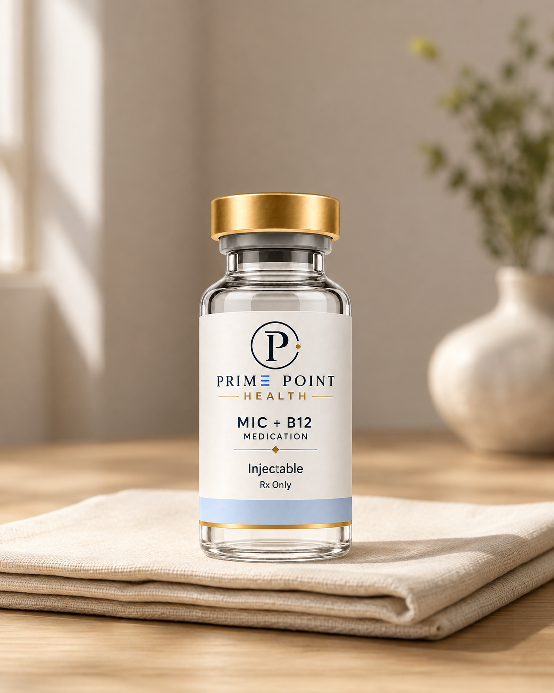

Fat
metabolism
Choline helps the liver package and move fats through the body. Methionine contributes to the chemical reactions involved in normal nutrient metabolism.

Product illustration. Actual packaging may vary.
Longevity
Starting from $125 $139 10% off
Support fat metabolism, boost energy, and enhance your body's natural detox process
Prescription only when clinically appropriate. Eligibility and results vary.
MIC is an injectable supplement blend combining vitamin B12 with three lipotropic (fat-metabolizing) compounds: methionine, inositol, and choline. It helps boost energy levels, support metabolism, and assist with weight loss.
Methionine (M): An essential amino acid that helps the liver break down fats and prevents extra fat from building up in the body.
Inositol (I): A compound related to B-vitamins that helps control insulin and assists in moving fats through the bloodstream.
Choline (C): A nutrient that helps transport fat out of the liver so your body can use it as fuel.
Vitamin B12: A vitamin that helps form red blood cells, reduces fatigue, and boosts overall energy levels.
Energy Boost: Helps reduce tiredness and brain fog, especially during dieting.
Fat Metabolism: Supports the liver in clearing out stored fats.
Weight Loss Support: Used alongside diet and exercise to help break through weight plateaus.
Choline helps the liver package and move fats through the body. Methionine contributes to the chemical reactions involved in normal nutrient metabolism.
Inositol forms part of cell membranes and signaling molecules. These signals help cells respond to hormones and coordinate everyday metabolic processes.
Vitamin B12 supports healthy red blood cell formation and normal nerve function. Correcting low B12 can help address fatigue caused by a deficiency.

The Prime Point quality standard
Before medication reaches a Prime Point patient, it is supported by a layered quality process designed to verify what is inside, protect its purity, and hold every pharmacy partner to a consistently high standard.
We test for potency to ensure every medication contains the correct concentration of active ingredients.
We ensure our pharmacy partners test for sterility so medications are free of foreign organisms, pathogens, and bacteria.
We test for endotoxicity to confirm medications adhere to established endotoxin safety recommendations.
Every medication is independently third-party tested, and every pharmacy is rigorously vetted before any partnership begins.